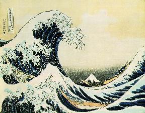
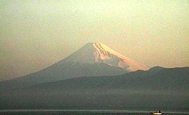
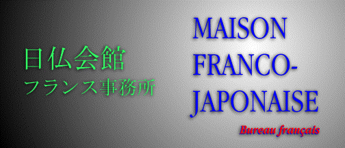
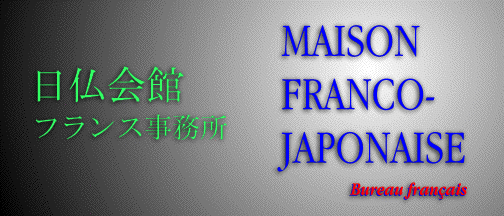

ザビエルのホームページ


ザビエルです。パリに住んでいます。ENSTでテレコミュ二ケションの勉強をしています。
今年学校で卒業します。
1973年 04月 29日に ROUENに生まれました。
日本へ三度行った事があります。初めて三年前に東京と京都で見物しました。
とても面白かった。

日本の文化が大好きから、もう一度あそこに行きたかった。
それでは、RIKKYO大学一昨年物理の研究の研修をしました。 去年
ソー二会社で働きました。
フランスで一週間に、三時間日本語の勉強をことにしています。
漢字で書くようにしています、しかしよく漢字の書き方を忘れてしまう。
私の先生が "書きなれると、漢字も易しくなりますね。"と
言ったりしています。
だからもっと練習しなければなりません。
ちょっと写真
を見ましょうか？
Some cool sites
(日本語／英語)...
 

英語／日本語 辞書。
漢字の辞書。
住所は...
Xavier Michel
212, rue de Tolbiac-chambre 132. 75013 PARIS, FRANCE
E-mail: xmichel@email.enst.fr
Resume


1997年 04月 09日